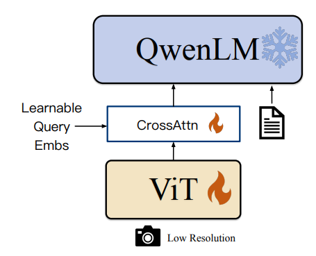
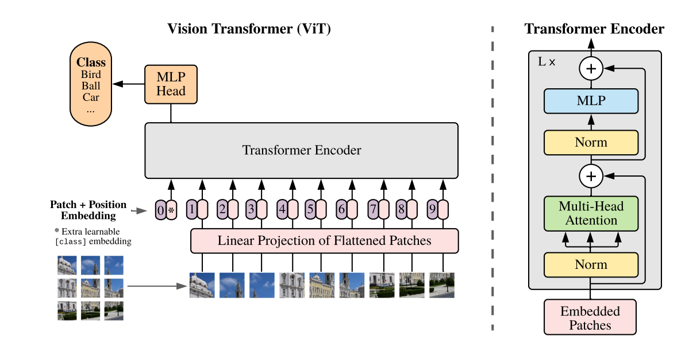
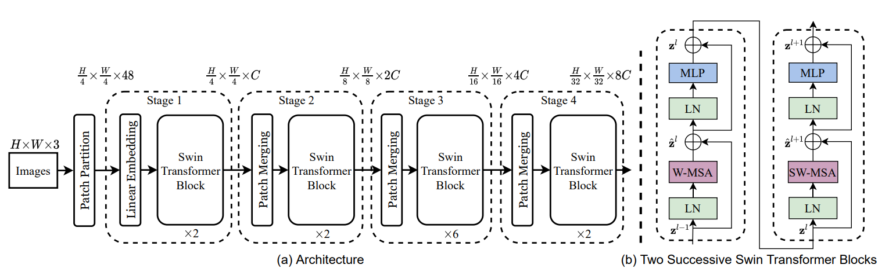
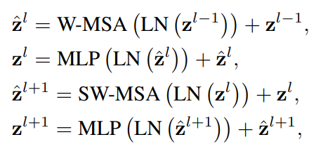
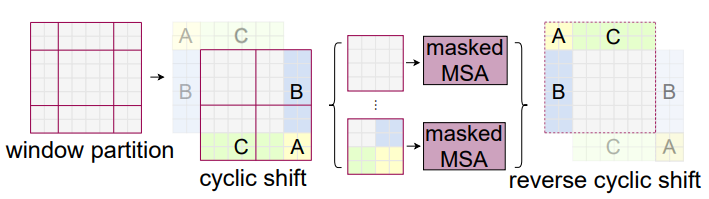
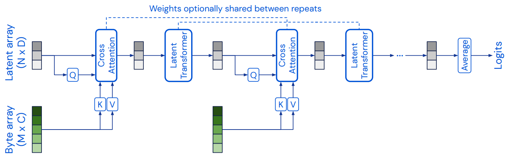

结构
一般来说类似 \(\text{Visual Encoder - Adaptor - LLM}\) 结构
\(\text{Visual Encoder}\) 是一个将图像编码为向量的部件, 一般为 \(\text{ViT}\)
\(\text{Adaptor}\) 将图像的向量变成与大模型适配的大小
最后与编码后的文字向量一起丢进 \(\text{LLM}\) 得出结果

图来自于 千问 的文章, 这是 \(\text{MLLM}\) 的大致结构
ViT
结构

图片 \(x\in \mathbb R^{H\times W\times C}\), \(C\) 是通道数
先将图片分块, 之后将其映射成 \(D\) 维的一维向量, 其中 \(D\) 是 transformer 的维数
这些向量称为 patch embeddings, 记作 \(x_p\in \mathbb R^{N\times (P^2\cdot C)}\)
将 transformer 中每层的输出记作 \(z_l\), 第 \(i\) 维记作 \(z_l^i\)
\(l\in [0,L],i\in [0,N]\)
之后将 position embedding 加入这个向量序列, 记作 \(z_0^0=x_{\text{class}}\)
这样就有 transofmer 中的迭代式:
其中 \(MSA=\text{Multi-Head Self-Attention},LN=\text{LayerNorm},MLP=\text{MultiLayer Perceptron}\)
\(E\) 表示前面说的, 将输入图像 \(x_p\) 映射到 tranformer 维度 \(D\) 的线性映射
\(E_{\text{pos}}\) 表示 position embedding, 用于维护位置信息
将 \(y\) 作为图像表示向量, 在训练与微调时在后面添加一个分类用的 MLP, 用于分类
inductive bias
ViT 相比 CNN, image-specific inductive bias 会更少
(image-specific inductive bias = 图像相关的归纳偏置)
CNN 有 locality, 2D neighborhood structure 和 translation equivariance
具体见笔记
而 ViT 只有 MLP 层有 locality 和 translation equivariance, attention 是 global 的
毕竟 attention 就是为了做全局理解的
而二维结构只在初始化时才有, 后面就转化成一维向量了
缺少归纳偏置会让 ViT 相比 CNN 更难在小数据上展现好的泛化能力
所以 ViT 的与训练过程数据集很大
结合 CNN
在原图的分块经过线性映射 \(E\) 之前, 可以先丢到一个 CNN 中, 再将 CNN 中间层的特征图丢给 \(E\), 这样帮助 transformer 在输入前就提取一部分特征
- 这一步是否也算加入了一些归纳偏置?
Swin Transformer

整体与 CNN 类似
每次把图片分成小的 window, 对 window 内的多个 patch 进行相互子注意力计算, 相当于卷积
然后把输出在 patch merging 块中合并, 实现降采样, 相当于 pooling
这样解决了上面 ViT 中 locality 归纳偏置少的问题
Swin-T Block
对于一个 Swin-T 块, 如图右半, 有计算公式:

核心就是 \(\text{W-MSA}\) 与 \(\text{SW-MSA}\)
其中 \(\text{W-MSA}\) 就是上面说的对一个窗口内做自注意力
同时我们想计算不同窗口之间的关联
所以把图片切割平移成:

\(\text{SW-MSA}\) 即对于上面平移过的 \(4\) 个窗口做自注意力
Perceiver
其主要的优势:
-
降低计算复杂度
byte array 对应于输入图片, 相对较大
而 latent array 相对较小
-
poistion encoding 的优化
这里只说第一点, 第二点具体可参见 [5]
整体结构
采用 cross attention 与 多层叠加的 transformer 交替的结构

其中 byte array 来自于输入图片
并且所有的 coess attention 层参数共享, transformer 也是参数共享
所以整体可以看成是深度循环的 RNN (普通 RNN 是时间循环)
复杂度
在 attention 中
其中 \(C,D\) 是图片通道数, \(M=H\times W\) 是图片大小, 通常很大
一个 attention 层的复杂度是 \(O(M^2D)\)
我们将 \(D\) 看作常数, 那么复杂度是 \(O(M^2)\), 关于 \(M\) 是平方的, 所以开销很大
所以在这里将 cross attention 的输入变成 latent array, 其维数是 \(N\), 是一个超参数
并且 \(N<<M\), 复杂度变成 \(O(MN)\), 要比 \(O(M^2)\) 更好
并且输入 transformer 的向量维度是 \(N\), 所以 transformer 单层复杂度是 \(O(N^2)\) 的, 整体为 \(O(LN^2)\), \(L\) 是层数
这样总复杂度为 \(O(MN+LN^2)\), 注意这使得 \(L\) 与 \(M\) 独立, 所以我们可以增大 \(L\) 来获得更好效果
cross-latent 迭代
由于只输入一次 byte array 可能导致一些特征在训练过程丢失, 所以我们多重复上面的 cross-latent 结构, 多输入几次 byte array, 加强学习
参数共享
由于每个 cross-latent 核做的事情是一样的, 所以每个核之间可以参数共享, 这使得整体结构像 RNN
Qwen-VL
使用 \(\text{ViT-CrossAttn-LLM}\) 结构
InternVL
使用 \(\text{ViT-MLP-LLM}\) 结构
MP-GUI
使用 \(\text{ViT-MLP+Perceiver-LLM}\) 结构
结构
将 ViT 提取的特征通过一个 MLP 做的 alignment projector 投影成 LLM 适配维度的向量
同时将 ViT 提取的特征丢进 3 个不同的 Perceiver, 用来提取文字, 空间, 图像方面的特征
最后将 projector, Perceiver, 还有 LLM 的 word embedding 一起投入一个融合模块 Fusion Gate, 产生 LLM 的输入, 输入 LLM 得出结果
参考: